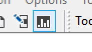

User commands¶
We’ve used the user command ]RunTime to compare the speed of two otherwise equivalent expressions elsewhere.
You may also have encountered system commands like )save, )clear and )off. The system commands are an integral part of the interpreter (and have been so for a very long time). That is, for Dyalog APL, they are written in C.
System commands are not APL functions, but rather a way to directly interact with the system. Thus, they do not follow APL syntax. Instead, they act more like commands on a command line. That’s why they’re called commands.
Sometimes, this non-syntactic way is really useful tor day-to-day stuff, and you’d want that for your APL code as well. This is where user commands come in. They have exactly the same syntax model as system commands, they just begin with a ] instead of a ).
The only thing built into the interpreter is that whenever it sees a line in the session beginning with ] it takes the rest of that line and calls ⎕SE.UCMD with the line as a character vector argument. Dyalog APL comes pre-installed with a “user command processor”, i.e. a function ⎕SE.UCMD which takes care of the rest. The default user command system is tightly integrated with SALT, but you could write your own drop-in, should you with to do so. Dyalog APL also comes loaded with more than 100 pre-defined user commands, some are simple and complex. All are written in APL, and you can change them as you see fit.
] -?
At this point, we should mention that all these user commands have a whole host of options which you can specify with various arguments or modifiers. It would be too much to go into details about it all, but you can always get documentation about any user command with ]cmdname -?, for example:
]calls -?
Now that we are talking about the special syntax of user commands, the command processor has another few tricks up its sleeve.
If for some reason you want to capture the result of a user command, you can do so with ]varname←cmdname. If you want to silence a user command, you can do that with ]←cmdname.
Remember that we said everything after the ] is passed as argument to ⎕SE.UCMD? That means that you can even call user command under program control: ⎕SE.UCMD 'cmdname'. Anything else you’d write on the line just goes inside that character vector.
Let’s have a look at some of the available user commands.
]CD¶
There are simple things like ]cd:
]cd
]cd, in its niladic form, shows the interpreter’s current working directory. You can set the current working directory, too, by
]cd /Users/stefan/work/notebooks
]cd /Users/stefan/work/notebooks/cultivations/contents
Note that when you set the current working directory this way, ]cd will echo back the directory it changed from, not the one it changed to.
]DInput¶
If you’ve ever wanted to enter or paste a multi-line statement into the session, you can use ]dinput. Note, however, that this is likely to be superseded in a future version by the currently experimental multi-line input mode.
What is a multi-line statement? Remember that you don’t have to assign dfns before you use them; you can insert them inline. And dfns may have multiple lines. Effectively, you then have a single multi-line statement.
Now, as soon as you press Enter in the session, you code will be executed, and if it has any un-closed braces, e.g. 2+{a←⍳10 it will fail. However, if you enter ]dinput you will get a new prompt indicated by a dot · and then you can begin entering (or pasting) multi-line statements. ]dinput will keep track of your brace-nesting level and indicate it with more dots.
You can also just type ]dinput f← and then paste a multi-line dfn there, beginning on that line. That’ll define it in the workspace.
Another important use for ]dinput is when you write multi-line functions in a Jupyter notebook cell, as you will have seen already in many places in this book.
]Calls¶
There are also various code analysis tools, like ]calls. It will produce a calling tree:
]calls getEnvir ⎕se.SALTUtils
This says that the getEnvir function in ⎕SE.SALTUtils calls these six functions, which in turn call the other listed functions, each at its level. This is really useful if you’re trying to extract some utility function and need to know its dependencies.
]Settings¶
A workspace stores information about each function; who was it last modified by, and when. This information can also be saved in script files with ]save if you turn on “atinfo tracking”. You can turn turn that on with ]settings track atinfo. Then you can list which functions were recently modified: ]Latest 20180501 -by=Fred
track isn’t the only setting:
]settings
These are basically like OS environment variables, but used just by SALT. For example, edprompt determines if the editor should ask you before writing changes to scripted items back to their source file. varfmt determines how ]save should save variables; as XML or as APL statements that produce the value. cmddir tells SALT where to look for user commands.
As you can gather, you can just drop your own or downloaded user commands into the mentioned /MyUCMDs dir and you’re in business. Watch the webinar about how to write your own user commands!
]ReorderLocals¶
If you’ve ever written anything moderately complex as a tradfn, you may have been annoyed that, as you edit along, your list of local variables on the header line is not neatly ordered. ]reorderlocals allows you to sort the header row of all (or some of) the functions currently in the workspace: ]reorderlocals MyFn or ]reorderlocals F* or just ]reorderlocals.
]CopyReg¶
If you’re on Windows, you have a few goodies especially for you. When the time comes to upgrade your Dyalog between major versions, but you’ve spent a whole year customising the current version to your liking. There is a user command that allows you to easily migrate your settings between versions:
]CopyReg 17u64 -to=18u64
does the job (you may need admin privileges, though).
The command processor¶
At this point, we should mention that all these user commands have a whole host of options which you can specify with various arguments or modifiers. It would be too much to go into details about it all, but you can always get documentation about any user command with ]cmdname -?:
]Summary¶
There are also commands that let you get an overview of things:
]summary ⎕se.Parser
This analyses the ⎕SE.Parser class and tells you a little bit about each function. P means public, C constructor, and the syntax is whether they have a result, number of arguments, and type (function/monadic operator/dyadic operator).
]XRef¶
]xref will produce a cross reference of all items in a namespace, which ones call or reference which, how they do so (global/local) and what type they all are.
]Box¶
You may already know about ]box. It is, for example, responsible for that nice boxed output you can see on TryAPL. You can turn that on and off, and decide exactly how you want it to display things with the user command. For now, let’s just see what the current settings are in this notebook:
]box ?
]Rows¶
There is a lesser known, but very useful, companion to ]box called ]rows. Probably, by now, you’ve entered a statement that caused way too much output, so your session would just scroll and scroll. Right? Well, the ]rows user command can protect you against that but limiting output to the current height and width of your window.
]rows ?
So if you do ]rows on -fold=3 it will cut any output four lines before the bottom of your screen, insert a row of dots (or whichever character you choose, e.g. ]rows on -fold=3 -dots=~) and then display the last three lines of the output. It will then also (by default) not wrap lines that are too long, but rather will cause them to continue beyond the right edge of the screen (scroll horizontally to see it). Again, see ]box -? and ]rows -? for the full details.
]Disp, ]Display¶
If you prefer boxing off during normal work, but want to display some results boxed here and there, you can use ]disp and ]display for that. ]disp is much like ]box -style=mid and ]display is like ]box -style=max.
As you saw above, the notebook uses -style=min, but that doesn’t always give you enough information:
2 3⍴'' (⍳3) (0 0⍴0) 'a'
OK, we’ve go three empty (or are they filled with spaces?) elements. But what are they really?
]display 2 3⍴'' (⍳3) (0 0⍴0) 'a'
Now we can see what exactly each thing is; we’ve got two empty character vectors and one 0-by-0 numeric matrix. We can also see that the a is a scalar, and the 1 2 3s are vectors (not e.g. one-row matrices).
]ADoc¶
If you comment your code using markdown, you can use ]adoc to automatically generate some documentation of it. ]adoc MyClass will open your browser with a nicely formatted html document that has comments and syntax information gleaned from your code.
]Calendar¶
For a quick calendar, do:
]Calendar
You can also specify a year or a month and a year, for example:
]Calendar January 1969
]Chart (Windows only)¶
If you are on Windows, you’ll have a handful more user commands than if not. Perhaps the coolest of them is the Chart Wizard. It has a button in the IDE:

But it is also available as a user command. Try e.g. ]chart (⍳50)×↓|1○(500÷⍨⍳50)∘.×⍳50. If you’re not on Windows, you can still generate charts using SharpPlot (for which ]chart is just a GUI). Here’s some example code for that, and the chapter on plotting in this book.
]Version¶
If you ever run into trouble with your APL system, you may want to know the version numbers of various parts and dependencies of your APL system:
]version -extended
]UVersion¶
If you’re having trouble with a user command, you can get the version number of it with:
]uversion calendar
]Compare¶
There is actually a whole family user commands, all called Compare. They are in the groups SALT, WS, ARRAY, FN, and FILE. You can use them to compare two similar items, just may have done file diffs, but here you can do them on various things related to APL. For example, ]WS.Compare path1/ws1 path2/ws2 compares two workspaces, and ]NS.Compare #.ns1 #.ns2 compares two namespaces. Of course, if your items are stored in script files, you could use your favourite diff tool, but it probably doesn’t have any understanding of the APL code involved.
]Document¶
If you want a “hardcopy” of your workspace or part of it, you can use ]document to list all items, describe what they are, and show how they look if typed into the session.
]FindRefs¶
If you work with a lot of objects, especially if they point to each other, you may find ]findrefs useful. It will follow all pointers (refs) and report everything. For example,
A ← ⎕NS '' ⋄ B←C←D←A
V ← 0 C 2 99
]findrefs
]Names¶
]Names lists names in workspaces in various ways, with sophisticated means for filtering. For example, to show all tradfns (nameclass 3.1) with a name containing a lowercase l, we can use a shell-style glob expression:
⎕CY 'salt'
]names 3.1 -filter=*l*
The -filter= option can also take full regexes,
]names 3.1 -filter=/.*\d.*/ ⍝ Tradfn names containing a digit
Note that the regex pattern is implicitly anchored to the beginning and end, so your pattern must match the whole name.
]Map¶
A really cool user command is ]map which draws a tree view of your workspace or (if given an argument) a specific namespace:
]map ⎕SE.Dyalog
The tree structure itself are the nested namespaces, while the lists of names are ordered by type; ~ are variables, ∇ are functions, ∘ are operators. It also displays ref-names and where they point.
]Peek¶
But perhaps the most powerful user command of them all is ]peek. It allows you to “peek” into a different workspace, execute an expression there, then come back with the result, all without polluting or modifying neither the current workspace, nor the workspace that was peeked into:
]peek dfns queens 5
How to place five queens on a 5-by-5 chess board without them being able to capture each other, all without even loading any utilities! How about that? :-)
There are, of course, many, many more user commands, and new versions of Dyalog usually adds more.
]APLCart¶
Version 18.2 of Dyalog added the ]aplcart user command. APLCart is searchable collection of short APL phrases. It is a goldmine of answers to APL-related questions of the type “How do I do X in APL?” for a surprisingly wide range of X. The ]aplcart command makes this resource available directly in the session,
]aplcart Append scalar to each column of matrix
]aplcart has a number of options and capabilities. You can, for example, filter results by regular expression:
]aplcart /highest|lowest/
or ask it to generate the URL to the corresponding search query on the website itself:
]aplcart /highest|lowest/ -url
A -b opens your default web browser on the corresponding results page instead of displaying it in the session.
]Get¶
18.2 also added the ]Get command. There is a lot to this (it comes with comprehensive documentation; see ]get -??), and we’ll only skim the surface here. ]Get provides a unified interface for quickly getting data (and code) into Dyalog from a multitude of different sources, including local files, by URL, or from git repositories. Note that this is intended as a development aid, and not something that should be relied upon during runtime or production.
From ]Get -??:
]Getis a development tool intended as a one-stop utility for quickly getting bringing resources into the workspace while programming. Do not use at run time, as exact results may vary. Instead, use precisely documented features like⎕JSON,⎕CSV,⎕XML, and⎕FIXin combination with loading tools like⎕NGET,HttpCommand,⎕SE.Link.Import, etc.
]Getsupports importing directories and the following file extensions (files with any other extensions are imported as character vectors): apla, aplc, aplf, apli, apln, aplo, charlist, charmat, charstring, charvec, class, csv, dcf, dcfg, dws, dyalog, function, interface, js, json, json5, operator, script, tsv, xml, zip
Here’s an example of fetching–and decoding–a remote XML-file:
]Get raw.githubusercontent.com/Dyalog/MiServer/master/Config/Logger.xml
]disp #.Logger
]Repr¶
Also making its debut in 18.2 was ]repr. It takes an APL value and returns (by default) an expression that produces this value.
]repr #.Logger
]repr 0 1 1 1 1 0 0 1 0 1 1 0 0 0 0 0 0 0 0 1 1
That’s useful enough, but it has a few other handy tricks up its sleeve, too. Perhaps you want to convert a specific APL value to csv?
]repr 'ABC'⍪2 3⍴⍳6 -f=csv
or maybe you need help with showing the correct parenthesing of a train?
]repr +⌿÷1⌈≢